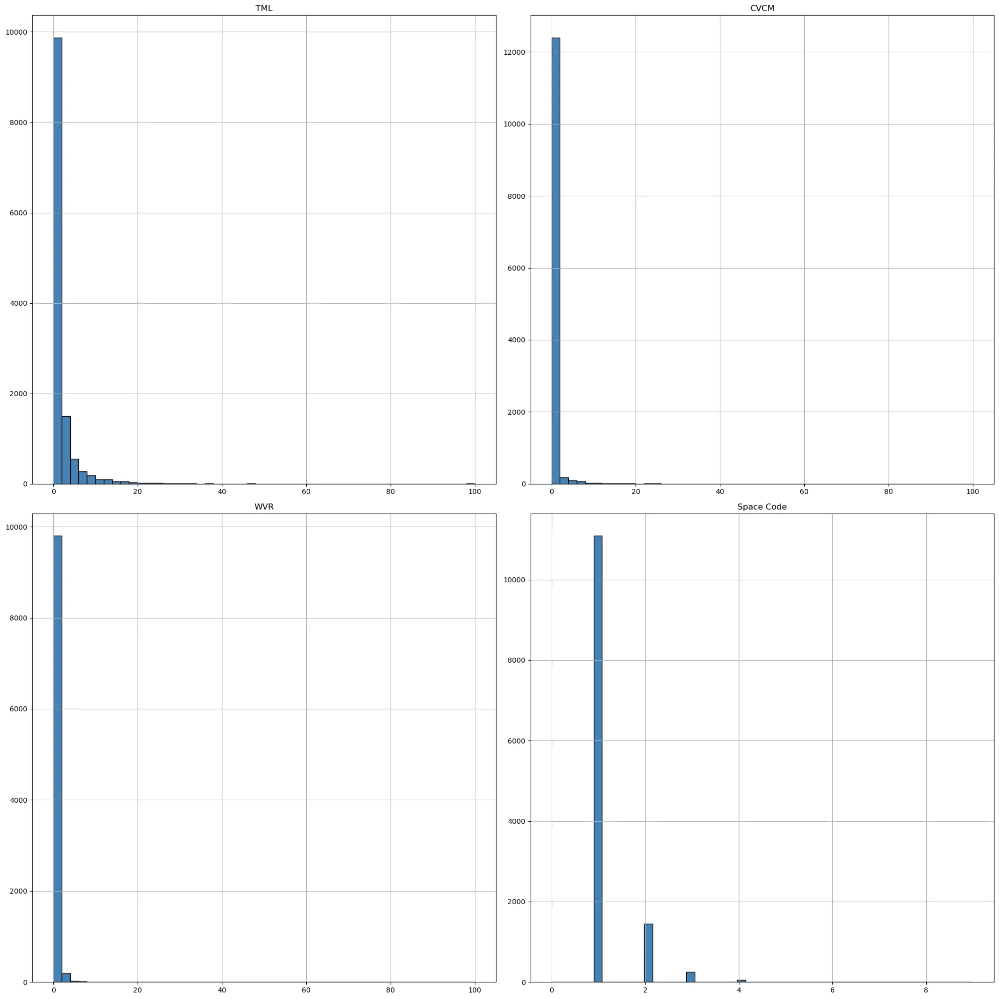
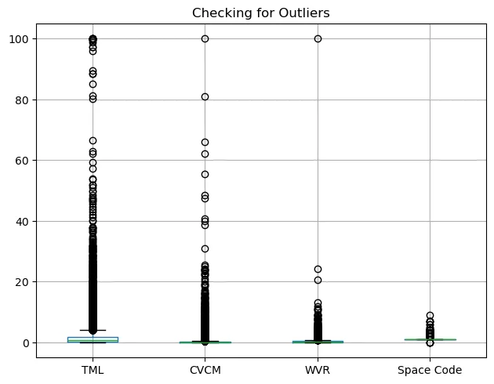
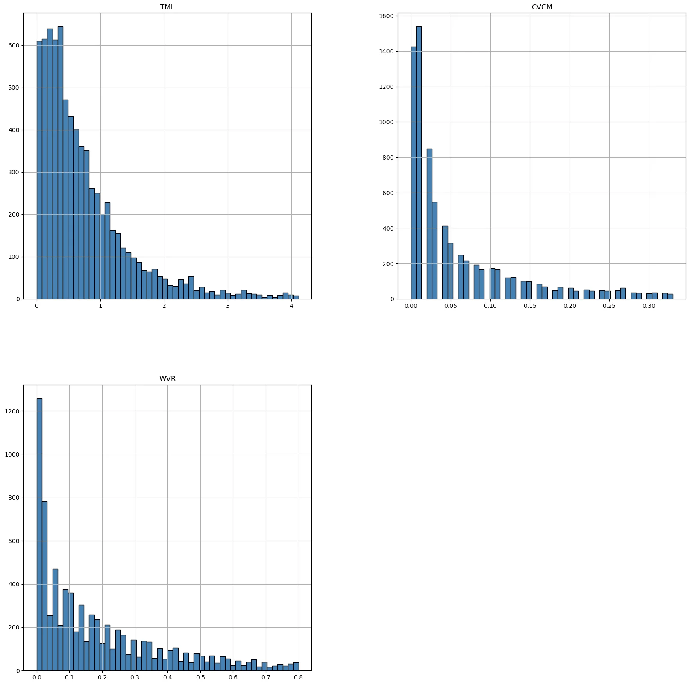
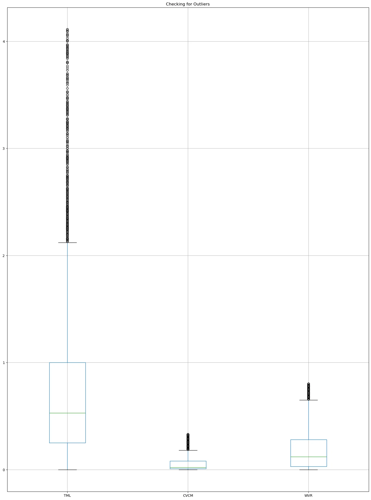

Outgassing Materials Data Processing
Imports (Always run before starting)
Code cell 3
import numpy as np
import pandas as pd
%matplotlib inline
import matplotlib.pyplot as plt
from sklearn import datasets
import seaborn as sns
from sklearn import svm
from sklearn.datasets import make_blobs
from sklearn.preprocessing import StandardScaler
from sklearn.linear_model import LogisticRegression
from sklearn.preprocessing import LabelEncoder
from sklearn.ensemble import RandomForestClassifier
from sklearn.model_selection import train_test_split
from sklearn.metrics import accuracy_score, precision_score, recall_score, confusion_matrix, classification_reportContents
- Data Preprocessing
- Cleaning and feature extraction code
For Logging
Code cell 6
import gossipcat as gc
log_name = 'NASA_Materials_Project'
log_file = r'C:\Users\GGPC\IoD_Mini_Projects\Mini_Project_2\project_NASA_Materials_Project\log\NASA_Materials_Project_EDA.log'
logger = gc.get_logger(logName=log_name, logFile=log_file)Importing data
Code cell 8
# Importing dataset
csv = r'C:\Users\GGPC\IoD_Mini_Projects\Mini_Project_2\project_NASA_Materials_Project\data\raw\Outgassing_Db_20240702.csv'
data = pd.read_csv(csv)
material_df = pd.DataFrame(data)1. Data Preprocessing
Reading in imported dataset and initial exploration of dataset
Code cell 11
# logger.info('Imported dataset for initial exploration')Code cell 12
material_df.head()| Sample Material | ID | MFR | TML | Category | CVCM | Space Code | WVR | Material Usage | Cure | |
|---|---|---|---|---|---|---|---|---|---|---|
| 0 | "V" MATERIAL IN CLICKBOND CB4023V, GLASS/PEI -... | GSC33214 | CLB | 0.37 | 12 | 0.00 | 1.0 | 0.35 | CLICKBOND | NaN |
| 1 | "VC" MATERIAL IN CLICKBOND CB9257VC, CARBON FI... | GSC33217 | CLB | 0.52 | 12 | 0.00 | 1.0 | 0.28 | CLICKBOND | NaN |
| 2 | 0.5 MIL KAPTON KEVLAR, SHELDAHL 177544 | GSC32950 | SCH | 2.48 | 6 | 0.05 | 1.0 | 1.97 | BLANKET MATERIAL | NaN |
| 3 | 0667 BLACK EPDM | GSC34174 | PRS | 0.65 | 15 | 0.13 | 1.0 | 0.07 | ORING | NaN |
| 4 | 1 INCH COPPER TAPE | GSC33829 | MMM | 0.24 | 16 | 0.08 | 1.0 | 0.01 | TAPE | NaN |
Code cell 13
material_df.info()Code cell 14
material_df = material_df.set_index('ID')Code cell 15
material_df.describe()| TML | Category | CVCM | Space Code | WVR | |
|---|---|---|---|---|---|
| count | 12858.000000 | 12859.000000 | 12853.000000 | 12857.000000 | 10047.000000 |
| mean | 2.151247 | 10.497628 | 0.407235 | 1.167535 | 0.342308 |
| std | 5.521467 | 19.563948 | 2.237969 | 0.470268 | 1.235159 |
| min | 0.000000 | 0.000000 | 0.000000 | 0.000000 | 0.000000 |
| 25% | 0.340000 | 1.000000 | 0.010000 | 1.000000 | 0.040000 |
| 50% | 0.810000 | 6.000000 | 0.040000 | 1.000000 | 0.150000 |
| 75% | 1.850000 | 13.000000 | 0.180000 | 1.000000 | 0.370000 |
| max | 100.000000 | 99.000000 | 99.990000 | 9.000000 | 99.990000 |
- TML: High variance with values ranging from 0 to 100.
- CVCM: Also shows high variance, suggesting outliers or diverse material behaviors.
- Space Code: Predominantly around 1, indicating similar ratings for most materials.
- WVR: High variance with values ranging from 0 to 99.99.
Code cell 17
# TML_filtered = material_df['TML'].quantile(0.75)
# CVCM_filtered = material_df['CVCM'].quantile(0.75)
# WVR_filtered = material_df['WVR'].quantile(0.75)
# Space_Code_filtered = material_df['Space Code'].quantile(0.90)
# material_df_filtered = material_df[(material_df['TML'] <= TML_filtered) &
# (material_df['CVCM'] <= CVCM_filtered) &
# (material_df['WVR'] <= WVR_filtered) &
# (material_df['Space Code'] <= Space_Code_filtered)
# ]Code cell 18
# logger.info('Filtered dataset to remove outliers')Code cell 19
material_df.hist(column=['TML', 'CVCM', 'WVR', 'Space Code'], bins=50, figsize=(20,20), color='steelblue', edgecolor='black')
plt.tight_layout()
plt.show()
'do anaysis of the graphs...'
Box plots for each category to visualize outliers
Code cell 22
material_df.boxplot(column = ['TML', 'CVCM', 'WVR', 'Space Code'])
plt.tight_layout()
plt.title('Checking for Outliers')
plt.show()
Code cell 23
# logger.info('Removing further outliers')Interquartile range (IQR) method to further remove outliers
Code cell 25
# Making IQR function to remove outliers
def remove_outliers(df, column):
Q1 = df[column].quantile(0.25)
Q3 = df[column].quantile(0.75)
IQR = Q3 - Q1
lower_bound = Q1 - 1.5 * IQR
upper_bound = Q3 + 1.5 * IQR
df = df[(df[column] >= lower_bound) & (df[column] <= upper_bound)]
return df
# Removing outliers from the dataset
material_no_outliers = material_df.copy()
material_no_outliers = remove_outliers(material_no_outliers, 'TML')
material_no_outliers = remove_outliers(material_no_outliers, 'CVCM')
material_no_outliers = remove_outliers(material_no_outliers, 'WVR')
#checking
material_no_outliers.shapeText output
(7571, 9)
Code cell 26
#checking hist for updated data distribution
material_no_outliers.hist(column=['TML', 'CVCM', 'WVR'], bins=50, figsize=(20,20), color='steelblue', edgecolor='black')
plt.show()
Code cell 27
#chceking with graph
material_no_outliers.boxplot(column = ['TML', 'CVCM', 'WVR'], figsize=(15,20) )
plt.tight_layout()
plt.title('Checking for Outliers')
plt.show()
Handling missing values
Code cell 29
material_no_outliers.isnull().sum()Text output
Sample Material 0 MFR 0 TML 0 Category 0 CVCM 0 Space Code 1 WVR 0 Material Usage 2 Cure 3474 dtype: int64
dropping and checking missing values
Code cell 31
material_cleaned = material_no_outliers.copy()
material_cleaned = material_cleaned.drop('Cure', axis=1)
material_cleaned = material_cleaned.dropna(subset=['Material Usage'], axis=0)
material_cleaned = material_cleaned.dropna(subset=['Space Code'], axis=0)
material_cleaned.isnull().sum()Text output
Sample Material 0 MFR 0 TML 0 Category 0 CVCM 0 Space Code 0 WVR 0 Material Usage 0 dtype: int64
Code cell 32
material_final = pd.DataFrame(material_cleaned)
material_final.columnsText output
Index(['Sample Material', 'MFR', 'TML', 'Category', 'CVCM', 'Space Code',
'WVR', 'Material Usage'],
dtype='object')Handing any duplicates
Code cell 34
#Checking for duplicates
material_final.duplicated().sum()Text output
9
Code cell 35
#dropping all duplicates
material_final = material_final.drop_duplicates()
#checking for duplicates again
material_final.duplicated().sum()
Text output
0
Code cell 36
# logger.info('Final dataset for EDA saved in result as cleaned_Outgassing_Db_20240702.csv')Code cell 37
#saving final dataset as csv file
material_final.to_csv(r'C:\Users\GGPC\IoD_Mini_Projects\Mini_Project_2\project_NASA_Materials_Project\data\result\cleaned_Outgassing_Db_20240702.csv')END
For EDA please find 'Outgassing_Materials_EDA.ipynb'